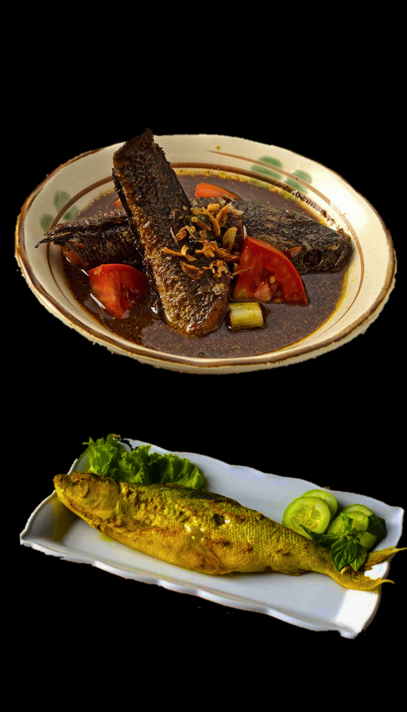

Localfood is the Best!
Sayur Gabus Pucung
Sayur Gabus Pucung is a traditional Indonesian dish, particularly popular in West Java, featuring a flavorful combination of snakehead fish (gabus) and young jicama (pucung). The dish is known for its rich and aromatic broth, which is made by simmering the fish with spices such as ginger, garlic, and turmeric, often enhanced by the addition of coconut milk.
Bandeng Rorod
Bandeng Rorod is a traditional Javanese dish that showcases the distinctive flavor of milkfish (bandeng) marinated in a blend of spices before being grilled or fried. The fish is usually deboned and filled with a savory mixture of spices, including garlic, shallots, and turmeric, which impart a rich taste to the dish.